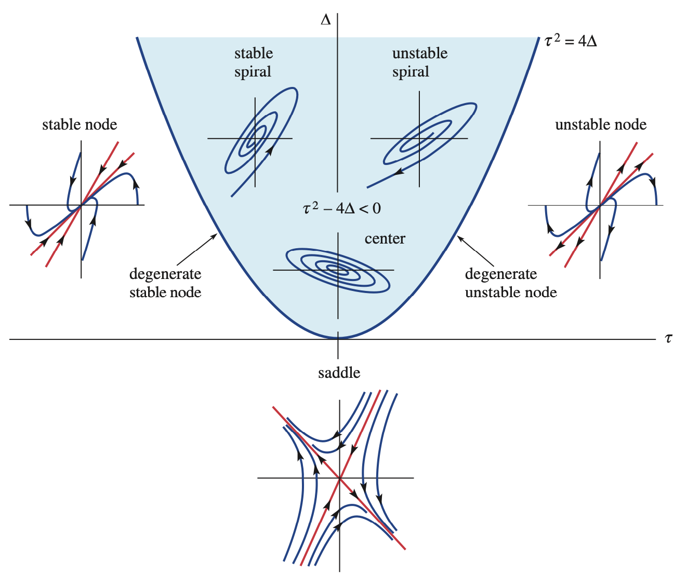
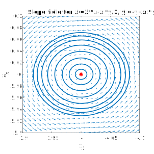
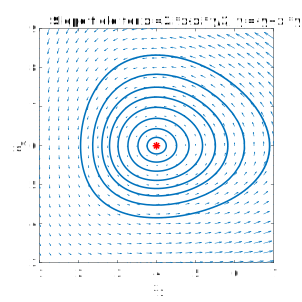

Code
using CairoMakie, LinearAlgebra, Printf\[ \newcommand{\float}{\mathbb{F}} \newcommand{\real}{\mathbb{R}} \newcommand{\complex}{\mathbb{C}} \newcommand{\nat}{\mathbb{N}} \newcommand{\integer}{\mathbb{Z}} \newcommand{\bfa}{\mathbf{a}} \newcommand{\bfb}{\mathbf{b}} \newcommand{\bfc}{\mathbf{c}} \newcommand{\bfe}{\mathbf{e}} \newcommand{\bff}{\mathbf{f}} \newcommand{\bfh}{\mathbf{h}} \newcommand{\bfp}{\mathbf{p}} \newcommand{\bfq}{\mathbf{q}} \newcommand{\bfu}{\mathbf{u}} \newcommand{\bfv}{\mathbf{v}} \newcommand{\bfw}{\mathbf{w}} \newcommand{\bfx}{\mathbf{x}} \newcommand{\bfy}{\mathbf{y}} \newcommand{\bfz}{\mathbf{z}} \newcommand{\bfA}{\mathbf{A}} \newcommand{\bfB}{\mathbf{B}} \newcommand{\bfD}{\mathbf{D}} \newcommand{\bfE}{\mathbf{E}} \newcommand{\bfP}{\mathbf{P}} \newcommand{\bfV}{\mathbf{V}} \newcommand{\bfW}{\mathbf{W}} \newcommand{\bfX}{\mathbf{X}} \newcommand{\fundm}{\boldsymbol{\Phi}} \newcommand{\bfzero}{\boldsymbol{0}} \newcommand{\bfmu}{\boldsymbol{\mu}} \newcommand{\opA}{\mathcal{A}} \newcommand{\rmn}[2]{\mathbb{R}^{#1 \times #2}} \newcommand{\cmn}[2]{\mathbb{C}^{#1 \times #2}} \newcommand{\dd}[2]{\frac{d #1}{d #2}} \newcommand{\ddd}[2]{\frac{d^2 #1}{d #2^2}} \newcommand{\pp}[2]{\frac{\partial #1}{\partial #2}} \newcommand{\norm}[1]{\left\lVert \mathstrut #1 \right\rVert} \newcommand{\abs}[1]{\left\lvert \mathstrut #1 \right\rvert} \newcommand{\twonorm}[1]{\norm{#1}_2} \newcommand{\onenorm}[1]{\norm{#1}_1} \newcommand{\infnorm}[1]{\norm{#1}_\infty} \newcommand{\innerprod}[2]{\langle #1,#2 \rangle} \newcommand{\pr}[1]{^{(#1)}} \newcommand{\diagm}[3]{\begin{bmatrix} #1 & & & \\ & #2 & & \\ & & \ddots & \\ & & & #3 \end{bmatrix}} \newcommand{\twovec}[2]{\begin{bmatrix} #1 \\ #2 \end{bmatrix}} \newcommand{\threevec}[3]{\begin{bmatrix} #1 \\ #2 \\ #3 \end{bmatrix}} \newcommand{\twomat}[4]{\begin{bmatrix} #1 & #2 \\ #3 & #4 \end{bmatrix}} \newcommand{\twodet}[4]{\begin{vmatrix} #1 & #2 \\ #3 & #4 \end{vmatrix}} \newcommand{\eye}[1]{\mathbf{e}_#1} \newcommand{\meye}{\mathbf{I}} \newcommand{\diag}{\operatorname{diag}} \newcommand{\sign}{\operatorname{sign}} \newcommand{\dist}{\operatorname{dist}} \newcommand{\simil}{\operatorname{sim}} \newcommand{\vec}{\operatorname{vec}} \newcommand{\unvec}{\operatorname{unvec}} \newcommand{\ee}{\times 10^} \newcommand{\floor}[1]{\lfloor#1\rfloor} \newcommand{\argmin}{\operatorname{argmin}} \newcommand{\rank}{\operatorname{rank}} \newcommand{\span}{\operatorname{span}} \newcommand{\nullsp}{\operatorname{nullsp}} \newcommand{\nullity}{\operatorname{nullity}} \newcommand{\rowsp}{\operatorname{rowsp}} \newcommand{\colsp}{\operatorname{colsp}} % \newcommand{\dimen}{\operatorname{dim}} \newcommand{\augmat}[2]{\left[ #1 \;\middle|\; #2 \right]} \]
using CairoMakie, LinearAlgebra, PrintfWe are finally ready to fuse together the two major themes of the course: dynamics and multiple variables.
A vector-valued ODE is an equation in the form
\[ \frac{d \bfx}{dt} = \bff(t,\bfx), \tag{6.1}\]
where \(\bfx\) is an \(n\)-dimensional vector. An equivalent point of view is to write Equation 6.1 as a coupled system of scalar ODEs:
\[ \begin{split} \frac{dx_1}{dt} &= f_1(t,x_1,\ldots,x_n),\\ & \vdots \\ \frac{dx_n}{dt} &= f_n(t,x_1,\ldots,x_n). \end{split} \tag{6.2}\]
Example 6.1 A famous system of three ODEs is the Lorenz system,
\[ \begin{split} \dot{x} & = \sigma(y-x), \\ \dot{y} & = \rho x - y - x z, \\ \dot{z} & = -\beta z + x y, \end{split} \]
where the dots indicate time derivatives and \(\sigma\), \(\rho\), and \(\beta\) are constant parameters. Conversion to the system notation follows from the definitions \(x_1=x\), \(x_2=y\), and \(x_3=z\), though of course the ordering is arbitrary.
This system is famous for its chaotic behavior and helped inspire the term butterfly effect. The Wikipedia page has a nice animation of a solution.
To define an initial-value problem, we supplement Equation 6.1 with the initial condition
\[ \bfx(0) = \bfx_0. \]
We will shortly be limiting our attention to systems in which the dependence in Equation 6.2 of each \(f_i\) on each \(x_j\) is linear. First, though, we mention an important connection between first-order systems and higher-order problems.
The restriction to first-order ODEs in Equation 6.1 actually turns out to be no limitation at all. Any higher-order equation, or system of higher-order equations, can be converted to a first-order system by increasing the dimension.
Each order of a derivative beyond the first can be exchanged for a dimension.
Example 6.2 The nonlinear pendulum equation
\[ \theta'' + \frac{g}{L} \sin(\theta) = f(t) \]
can be transformed by the change of variables \(x_1=\theta\), \(x_2=\theta'\) into
\[ \begin{split} x_1' &= x_2 \\ x_2' &= f(t) - \frac{g}{L}\sin(x_1), \end{split} \]
which is of the form Equation 6.1.
The transformation in Example 6.2 has the physical interpretation of using position and angular momentum as the dependent unknowns; together these are the state of the system. The technique is straightforward to generalize to any problem or system having ODEs of order greater than one. We will encounter just one more significant example.
Example 6.3 The simple harmonic oscillator
\[ x'' + 2 \zeta \omega_0 x' + \omega_0^2 x = f(t) \]
can be converted to an equivalent first-order system using the definitions
\[ u_1 = x, \quad u_2 = x'. \]
We can easily derive an ODE for \(\bfu\) without reference to \(x\). First, by definition, \(u_1'=u_2\). Next, \(u_2' = x''\), and we can isolate \(x''\) in the original equation to get
\[ u_2' = f - 2 \zeta \omega_0 x' - \omega_0^2 x = f - 2 \omega_0\zeta u_2 - \omega_0^2 u_1. \]
Hence
\[ \begin{split} u_1' &= u_2,\\ u_2' &= f - 2 \omega_0 \zeta u_2 - \omega_0^2 u_1. \end{split} \]
While every high-order problem can be converted to a first-order system, the converse is not true. That is, there are first-order systems that are not equivalent to any higher-order problem.
Rather than the fully general system Equation 6.1, we will focus on linear problems.
Definition 6.1 (Linear system of ODEs) A linear ODE system is an equation of the form
\[ \mathbf{x}'(t) = \mathbf{A}(t)\mathbf{x}(t) + \bff(t), \tag{6.3}\]
where \(\mathbf{x}(t)\) is an \(n\)-dimensional vector-valued function, \(\mathbf{A}(t)\) is an \(n\times n\) coefficient matrix, and \(\bff(t)\) is an \(n\)-dimensional forcing function. If the coefficient matrix does not depend on time, the system is said to be constant-coefficient.
An initial condition for the system is a time \(t_0\) and vector \(\mathbf{x}_0\) such that \(\mathbf{x}(t_0)=\mathbf{x}_0\).
The matrix in Equation 6.3 must be square.
Example 6.4 The simple harmonic oscillator system in Example 6.3 is equivalent to
\[ \bfu' = \twomat{0}{1}{-\omega_0^2}{-2 \omega_0 \zeta} \bfu + \twovec{0}{f}, \]
where \(u_1 = x\), \(u_2 = x'\) is the state vector.
Example 6.5 Suppose two connected tanks hold brine. Tank 1 holds 100 L, has an input of 4 L/hr of brine of concentration 3 kg/L, and an output of 6 L/hr. Tank 2 holds 200 L, has an input of 7 L/hr of brine of concentration 5 kg/L, and an output of 5 L/hr. Tank 1 pumps 1 L/hr into tank 2, and tank 2 pumps 3 L/hr into tank 1.
Let \(x_i(t)\) be the mass of salt in tank \(i\). The statements above imply
\[ \begin{split} \dd{x_1}{t} & = 4\cdot 3 - 6\cdot \frac{x_1}{100} - 1\cdot \frac{x_1}{100} + 3 \cdot \frac{x_2}{200} \\ \dd{x_2}{t} & = 7\cdot 5 - 5\cdot \frac{x_2}{200} - 3\cdot \frac{x_2}{200} + 1\cdot \frac{x_1}{100}\\ \end{split}. \]
This is neatly expressed using linear algebra:
\[ \dd{}{t} \twovec{x_1}{x_2} = \frac{1}{200}\twomat{-14}{3}{2}{-8} \twovec{x_1}{x_2} + \twovec{12}{35}. \]
Example 6.6 Here is a basic model for heating in a house. Let \(b(t)\) be the temperature of the basement, \(m(t)\) be the temperature of the main living area, and \(a(t)\) be the temperature of the attic. Suppose the ground is at a constant 10 degrees C. We use a Newtonian model to describe how the temperature of the basement evolves due to interactions with the earth and the main floor:
\[ \frac{db}{dt} = -k_b (b - 10) - k_{mb} (b-m). \]
Similarly, the attic interacts with the air, which we will hold at 2 degrees, and the main floor:
\[ \frac{da}{dt} = -k_a (a - 2) - k_{ma} (a-m). \]
Finally, suppose the main area interacts mostly with the other levels and experiences input from a heater:
\[ \frac{dm}{dt} = -k_{mb} (m - b) - k_{ma} (m - a) + h(t). \]
To write the system in vector form, we define \(x_1=b\), \(x_2=m\), and \(x_3=a\). Then
\[ \frac{d\bfx}{dt} = \threevec{(-k_b - k_{mb}) x_1 +k_{mb} x_2}{ k_{mb}x_1 -(k_{mb}+k_{ma})x_2 + k_{ma}x_3}{k_{ma}x_2 -(k_{ma}+k_a)x_3} + \threevec{10k_b}{h(t)}{2k_a}. \]
Observe that on the right side, the terms depending on \(\bfx\) have been separated from the others. Hence
\[ \bfx' = \begin{bmatrix} -k_b-k_{mb} & k_{mb} & 0 \\ k_{mb} & -k_{mb}-k_{ma} & k_{ma} \\ 0 & k_{ma} & -k_{ma}-k_a \end{bmatrix} \bfx + \threevec{10k_b}{h(t)}{2k_a}. \]
You need to read and write carefully when in vector-land. In particular, note that \(\mathbf{x}_1\) refers to the first vector of a collection, while \(x_1\) means the first component of a vector \(\mathbf{x}\).
Virtually all of the theoretical statements we made about the scalar linear problem \(x'=a(t)x+f(t)\) can be remade with boldface/capital letters for the linear system \(\mathbf{x}'=\mathbf{A}(t)\mathbf{x}+\bff(t)\). Those statements relied mainly on linearity. Most notably:
Theorem 6.1 (General solution of ODE linear system) Every solution of
\[ \mathbf{x}'=\mathbf{A}(t)\mathbf{x}+\bff(t) \]
can be written in the form
\[ \mathbf{x}=\mathbf{x}_h+\mathbf{x}_p, \]
where \(\mathbf{x}_h\) is the general solution of \(\mathbf{x}'=\mathbf{A}(t)\mathbf{x}\) and \(\mathbf{x}_p\) is any solution of \(\mathbf{x}'=\mathbf{A}(t)\mathbf{x}+\bff(t)\).
Once again, then, we look first at the homogeneous system with no forcing term.
Given \[ \mathbf{x}' = \mathbf{A}(t)\mathbf{x}, \tag{6.4}\]
where \(\mathbf{x}\in\mathbb{R}^{n}\) and \(\mathbf{A}\in\mathbb{R}^{n\times n}\), we can easily show in the usual way that any linear combination of solutions is also a solution. In fact, we have a new way of stating this result.
Definition 6.2 (Solution space) The set of all solutions of a homogeneous equation \(\mathbf{x}' = \mathbf{A}(t)\mathbf{x}\) is a subspace of vector-valued functions called the solution space.
Our first major goal is to find a basis for the solution space.
Suppose \(\mathbf{x}_1,\ldots,\mathbf{x}_m\) are homogeneous solutions of Equation 6.4, and that we use a linear combination of them to satisfy an initial condition \(\mathbf{x}(0)=\mathbf{x}_0\):
\[ c_1 \mathbf{x}_1(0) + \cdots + c_m \mathbf{x}_m(0) = \mathbf{x}_0. \]
Using the equivalence of linear combination with matrix-vector multiplication, we define the \(n\times m\) matrix
\[ \fundm(t) = \bigl[ \mathbf{x}_1(t) \; \mathbf{x}_2(t) \; \cdots \; \mathbf{x}_m(t) \bigr], \tag{6.5}\]
so that
\[ \fundm(0) \begin{bmatrix} c_1 \\ c_2 \\ \vdots \\ c_m \end{bmatrix} = \mathbf{x}_0. \tag{6.6}\]
This is a linear algebraic system for the coefficients \(c_i\). We can expect a unique solution if and only if \(m=n\) and \(\bfX(0)\) is invertible.
Definition 6.3 (Fundamental matrix) The \(n\times n\) matrix \(\fundm(t)\) is a fundamental matrix of the homogeneous system \(\mathbf{x}' = \mathbf{A}(t)\mathbf{x}\) if its columns satisfy
\[ \mathbf{x}_j'=\mathbf{A}\mathbf{x}_j, \quad j=1,\ldots,n, \tag{6.7}\]
and \(\fundm(t)\) is invertible at all times in an open interval \(I\) where \(\bfA\) is continuous. In this situation, we refer to the columns of \(\fundm\) as a fundamental set of solutions.
Because Definition 6.3 says nothing about an initial condition, a homogeneous ODE has infinitely many fundamental matrices.
A condition equivalent to Equation 6.7 is that \(\fundm\) satisfies the matrix ODE
\[ \fundm'=\bfA\fundm. \]
Since invertibility is required for a fundamental matrix, we should not be surprised to see its determinant popping up.
Definition 6.4 (Wronskian) Let \(\mathbf{x}_1,\ldots,\mathbf{x}_n\) be a collection of vector-valued functions where each \(\bfx_i\) is \(n\)-dimensional. Their Wronskian is a function of \(t\) defined by
\[ W(\bfx_1,\ldots,\bfx_n) = \det\Bigl( \bigl[ \mathbf{x}_1(t) \: \cdots \: \mathbf{x}_n(t) \bigr] \Bigr). \]
Theorem 6.2 Suppose that \(\mathbf{x}_1,\ldots,\mathbf{x}_n\) are solutions of Equation 6.4, and \(I\) is an interval where \(\bfA(t)\) is continuous. The following are equivalent statements:
The third item in Theorem 6.2 is the most interesting. It implies that the Wronskian is either always zero or never zero, so it’s sufficient to check the Wronskian at any single value of \(t\).
Example 6.7 Given the two solutions
\[ \mathbf{x}_1(t)=e^{2 t}\twovec{3}{-1}, \quad \mathbf{x}_2(t)=e^{-3 t}\twovec{2}{2}, \]
show that they are fundamental.
Solution. We calculate
\[ W(\bfx_1,\ldots,\bfx_n) = \det\bigl(\bigl[ \bfx_1 \: \bfx_2\bigr]\bigr) = \twodet{3 e^{2 t}}{2 e^{-3 t}}{-e^{2 t}}{2 e^{-3 t}} = 8 e^{-t}. \]
The exponential function is never zero, so we know the Wronskian is never zero. Hence the two solutions are fundamental.
We could have made the process even easier by first setting \(t=0\) in both solutions. Then we would have
\[ W(\bfx_1,\ldots,\bfx_n; t=0) = \twodet{3}{2}{-1}{2} = 8. \]
Say \(\mathbf{v}_1=[a,\,c]\) and \(\mathbf{v}_2=[b,\,d]\). Then
A fundamental matrix gives everything we need to construct the general homogeneous solution.
Theorem 6.3 If \(\fundm\) is a fundamental matrix for \(\bfx'=\bfA(t)\bfx\), then the general solution of this system is
\[ \bfx_h = \mathbf{x}(t)=\fundm(t)\mathbf{c}, \]
for an arbitrary constant vector \(\mathbf{c}\).
Example 6.8 Given that the following are solutions of \(\bfx' = \bfA \bfx\) over \((-\infty, \infty)\):
\[ \bfx_1 = \threevec{2}{-1}{0} + t \threevec{1}{3}{1}, \quad \bfx_2 = \threevec{0}{1}{2}, \quad \bfx_3 = \threevec{0}{0}{-3} + t \threevec{1}{1}{2}, \]
find a general solution of the homogeneous system.
Solution. We first want to show that these solutions are fundamental. Setting \(t=0\), the Wronskian is
\[ \begin{vmatrix} 2 & 0 & 0 \\ -1 & 1 & 0 \\ 0 & 2 & -3 \end{vmatrix} = -6. \]
Hence we have the fundamental matrix
\[ \fundm(t) = \begin{bmatrix} 2+t & 0 & t \\ -1+3t & 1 & t \\ t & 2 & -3+2t \end{bmatrix}, \]
and the general solution is \(\bfx = \fundm(t) \mathbf{c}\) for an arbitrary constant vector \(\mathbf{c}\).
While the theory of homogeneous linear ODE systems is a fairly painless extension of our scalar adventures, the good news for the general case pretty much ends there. But there is a very important special case in which we can say a lot more: when the coefficient matrix is constant. So we home in on the homogeneous, constant-coefficient problem
\[ \bfx' = \bfA \bfx, \tag{6.8}\]
where \(\bfA\) is an \(n\times n\) constant matrix.
We are finally ready to see one major benefit of eigenvalues. Suppose that
\[ \mathbf{A} \mathbf{v} = \lambda \mathbf{v}. \]
Let’s define
\[ \bfx(t) = e^{\lambda t} \bfv. \tag{6.9}\]
We find that
\[ \bfx'(t) = \lambda e^{\lambda t} \bfv = e^{\lambda t} (\lambda \bfv) = e^{\lambda t} (\bfA \bfv) = \bfA (e^{\lambda t} \bfv). \]
That is:
Theorem 6.4 If \(\mathbf{A} \mathbf{v} = \lambda \mathbf{v}\), then Equation 6.9 is a solution of Equation 6.8.
Counting algebraic multiplicities, we know that \(\mathbf{A}\) has eigenvalues \(\lambda_1,\ldots,\lambda_n\). Say that we have eigenvectors \(\mathbf{v}_1,\ldots,\mathbf{v}_n\) to go with them. Then we have \(n\) homogeneous solutions
\[ \mathbf{x}_j(t) = e^{t \lambda_j} \mathbf{v}_j, \quad j=1,\ldots,n. \]
Our next move is to determine whether
\[ \bigl[ \mathbf{x}_1(t) \; \mathbf{x}_2(t) \; \cdots \; \mathbf{x}_n(t) \bigr] \]
is a fundamental matrix. According to Theorem 6.2, we can ask that question at any value of \(t\), including \(t=0\). So the key issue is whether
\[ \bfV = \bigl[ \mathbf{v}_1 \; \mathbf{v}_2 \; \cdots \; \mathbf{v}_n \bigr] \tag{6.10}\]
is invertible. If so, then we have the ingredients of the general homogeneous solution. But we have already named that situation as diagonalizability.
Theorem 6.5 (Solution by eigenvectors) Let \(\mathbf{A}\) have eigenvalues \(\lambda_1,\ldots,\lambda_n\) and corresponding eigenvectors \(\mathbf{v}_1,\ldots,\mathbf{v}_n\). If \(\bfA\) is diagonalizable, then
\[ \fundm(t) = \begin{bmatrix} e^{t \lambda_1} \mathbf{v}_1 & \cdots & e^{t \lambda_n} \mathbf{v}_n \end{bmatrix} \tag{6.11}\]
is a fundamental matrix for \(\mathbf{x}'=\mathbf{A}\mathbf{x}\), and the general solution can be expressed as
\[ \mathbf{x}(t) = \fundm(t)\mathbf{c} = c_1 e^{t \lambda_1} \mathbf{v}_1 + \cdots + c_n e^{t \lambda_n} \mathbf{v}_n. \tag{6.12}\]
In particular, Equation 6.11 and Equation 6.12 hold if the eigenvalues of \(\bfA\) are distinct (i. e., all of them are simple).
Example 6.9 Given that
\[ \mathbf{A} = \begin{bmatrix} 1 & 1 \\ 4 & 1 \end{bmatrix} \]
has eigenpairs
\[ \lambda_1=3,\: \mathbf{v}_1 = \twovec{1}{2}, \quad \lambda_2=-1,\: \mathbf{v}_2=\twovec{1}{-2}, \]
find the general solution of \(\bfx'=\bfA\bfx\).
Solution. With the eigenvalues and eigenvectors provided, the general solution is formulaic:
\[ \mathbf{x}(t) = c_1 e^{3t} \twovec{1}{2} + c_2 e^{-t} \twovec{1}{-2} = \twovec{ c_1 e^{3t} + c_2 e^{-t}}{2c_1 e^{3t} - 2 c_2e^{-t}}. \]
(For the record, the determinant of
\[ \bfV = \twomat{1}{1}{2}{-2} \]
is \(-4\), so this matrix is not singular, as guaranteed by Theorem 6.5.)
If \(\bfA\) has a repeated nondefective eigenvalue, then we can still use Theorem 6.5.
If the matrix \(\bfA\) is not diagonalizable, though, we can’t use the eigenvectors alone to find a fundamental matrix. There is a fairly straightforward workaround, although it’s painful to do by hand for more than a double eigenvalue.
Suppose \(\lambda\) has algebraic multiplicity 2, eigenvector \(\bfv\), and geometric multiplicity 1. One solution is again
\[ \bfx_1 = e^{\lambda t}\, \bfv . \]
It turns out that there is a second solution of the form
\[ \bfx_2 = t e^{ \lambda t}\, \bfv + e^{\lambda t}\, \bfw, \tag{6.13}\]
where \(\bfw\) is a constant vector to be determined. Then
\[ \bfx_2' = (e^{\lambda t} + \lambda t e^{\lambda t})\, \bfv + \lambda e^{\lambda t}\, \bfw, \]
and, since \(\bfv\) is an eigenvector,
\[ \bfA \bfx_2 = t e^{\lambda t} (\lambda \bfv) + e^{\lambda t} \bfA \bfw. \]
We get \(\bfx_2\) to be a solution by making these last two lines equal each other, i. .e,
\[ e^{\lambda t}\, \bfv + \lambda t e^{\lambda t}\,\bfv + \lambda e^{\lambda t}\, \bfw = t e^{\lambda t} (\lambda \bfv) + e^{\lambda t}\, \bfA \bfw \]
After cancelling some things, this boils down to just
\[ (\bfA - \lambda \meye) \bfw = \bfv, \tag{6.14}\]
which is just a linear system to solve for \(\bfw\)!
Example 6.10 The matrix
\[ \mathbf{A} = \begin{bmatrix} -2 & 1 \\ 0 & -2 \end{bmatrix} \]
has the single eigenvalue \(\lambda_1=-2\) with eigenspace spanned by \(\mathbf{v}_1=[1,\,0]\). Find the general solution of \(\bfx'=\bfA\bfx\).
Solution. One solution is
\[ \bfx_1 = e^{-2t} \twovec{1}{0}. \]
We can find a second solution by solving Equation 6.14 with \(\lambda=-2\):
\[ \twomat{0}{1}{0}{0} \bfw = \twovec{1}{0}. \]
The solution is \(\bfw=\twovec{0}{1}\). Then we use Equation 6.13 to get a second solution,
\[ \bfx_2 = t e^{-2t} \twovec{1}{0} + e^{-2t} \twovec{0}{1} = \twovec{t e^{-2t}}{e^{-2t}}. \]
Hence, a fundamental matrix is
\[ \fundm(t) = \twomat{e^{-2t}}{t e^{-2t}}{0}{e^{-2t}}, \]
and the general solution is \(\bfx(t) = \fundm(t) \mathbf{c}\) for an arbitrary constant vector \(\mathbf{c}\).
Theorem 6.5 works fine if the eigenvalues and eigenvectors are complex. However, a purely real-number alternative form is also available.
Suppose that
\[ \lambda = r + i\omega, \qquad \bfv = \bfu_1 + i\, \bfu_2. \]
Then
\[ e^{\lambda t} \bfv = e^{rt} (\cos(\omega t) + i\sin(\omega t) )\, (\bfu_1 + i\, \bfu_2). \]
The real and imaginary parts of the above product form the basis of the real solution. Specifically,
\[ \bfx(t) = a_1 e^{rt} \Bigl( \cos(\omega t)\,\bfu_1 - \sin(\omega t) \,\bfu_2(t) \Bigr) + a_2 e^{rt} \Bigl( \cos(\omega t)\,\bfu_2 + \sin(\omega t) \,\bfu_1(t) \Bigr), \tag{6.15}\]
for arbitrary real \(a_1\) and \(a_2\). However, it may be easier to simply apply Euler’s formula for complex exponentials, as shown in the next example, than to apply Equation 6.15.
Example 6.11 Find the general solution of
\[ \bfx' = \twomat{1}{1}{-1}{1} \bfx. \]
Solution. The eigenvalues are \(1\pm i\) with corresponding eigenvectors \(\twovec{1}{i}\) and \(\twovec{1}{-i}\). This leads to the solution
\[ \bfx(t) = c_1 e^{(1+i)t} \twovec{1}{i} + c_2 e^{(1-i)t} \twovec{1}{-i}. \]
This is valid, but possibly inconvenient. If we started with real initial conditions, the solution should remain real at all times.
We can use Euler’s formula to write out one of the terms above:
\[ e^{(1+i)t} \twovec{1}{i} = e^t \twovec{\cos t + i \sin t}{i\cos t - \sin t} = e^t \twovec{\cos t}{-\sin t} + i\, e^t \twovec{\sin t}{\cos t}. \]
Then, we can use the real and imaginary parts of the last line as independent real solutions. Thus,
\[ \bfx(t) = a_1 e^t \twovec{\cos t}{-\sin t} + a_2 e^t \twovec{\sin t}{\cos t} \]
for arbitrary real \(a_1\) and \(a_2\).
Earlier we showed that the harmonic oscillator
\[ x'' + 2 Z \omega_0 x' + \omega_0^2 x = 0 \]
can be converted to the constant-coefficient system
\[ \bfu' = \twomat{0}{1}{-\omega_0^2}{-2Z\omega_0} \bfu. \]
via \(u_1=x\), \(u_2=x'\). The eigenvalues of the coefficient matrix are the roots of the characteristic polynomial
\[ \twodet{-z}{1}{-\omega_0^2}{-2 \zeta \omega_0-z} = z^2 + 2 \zeta \omega_0 z + \omega_0^2. \]
This is identical to what we called the characteristic polynomial of the oscillator ODE!
The characteristic values of the simple harmonic oscillator are the eigenvalues of the coefficient matrix of the equivalent first-order system.
In the underdamped case \(\zeta < 1\), for instance, the eigenvalues are complex: \(\lambda = -\zeta \omega_0 \pm i \omega_d\), where \(\omega_d=\omega_0 \sqrt{1-\zeta^2}\). The first eigenvalue \(\lambda_1\) has eigenvector
\[ \twovec{1}{\lambda_1}. \]
If we want the general solution of just the original \(x\) variable, then we only need the first component of the eigenvector, and the general solution combines the real and imaginary parts of \(e^{\lambda_1 t}\):
\[ x(t) = u_1(t) = a_1 e^{-\zeta \omega_0t} \cos(\omega_d t) + a_2 e^{-\zeta \omega_0t} \sin(\omega_d t). \]
It’s worth repeating: the second-order problem is fully covered by the equivalent first-order system.
Definition 6.5 Any constant solution of the homogeneous system \(\mathbf{x}'=\mathbf{A}\mathbf{x}\) is an equilibrium solution or steady-state solution.
Clearly, \(\mathbf{x}(t)\equiv \bfzero\) is always an equilibrium solution.
If \(\mathbf{A}\) is singular, then there are nonzero equilibrium solutions of the homogeneous system \(\mathbf{x}'=\mathbf{A}\mathbf{x}\) as well, but we will not pursue those.
Just as with scalar first-order ODEs, stability is a crucial property of an equilibrium solution. Suppose we start \(\mathbf{x}'=\mathbf{A}\mathbf{x}\) at infinitesimally small initial conditions. If the state always approaches zero as \(t\to\infty\), we say that the equilibrium at zero is asymptotically stable. This is what happens, for instance, to a damped linear oscillator. If, on the other hand, the system has infinitesimal initial states that grow without bound, then the equilibrium is unstable.
The stability properties depend on the eigenvalues of \(\mathbf{A}\). This is most easily summarized in the special case of a \(2\times 2\) real matrix with eigenvalues \(\lambda_1,\lambda_2\). The major cases to be considered, leaving out some pesky edge cases, are summarized in Table 6.1. (The third column of that table is to be explained next.)
| Eigenvalues | Stability | Type |
|---|---|---|
| \(\lambda_1 < \lambda_2 < 0\) | asymptotically stable | node |
| \(\lambda_1 < 0 < \lambda_2\) | unstable | saddle |
| \(0 < \lambda_1 < \lambda_2\) | unstable | node |
| \(\lambda = r\pm i \omega,\: r< 0\) | asymptotically stable | spiral |
| \(\lambda = \pm i \omega\) | stable, not asymptotically stable | center |
| \(\lambda = r\pm i \omega,\: r> 0\) | unstable | spiral |
In the two-dimensional case, the solutions of \(\mathbf{x}'=\mathbf{A}\mathbf{x}\) can be plotted as trajectories parameterized by time in the \((x_1,x_2)\) plane, often called the phase plane. Each of the cases in Table 6.1 has a characteristic type of phase plane portrait that illustrates major aspects of solution behaviors.
When the eigenvalues are real and have the same sign, the steady state is called a node. If the sign is negative, all trajectories head into the steady state and it is stable; conversely, in the positive case it is unstable.
Here is a phase plane plot for \(\mathbf{A}=\twomat{-4}{-1}{-2}{-5}\), which has eigenvalues \(-3\) and \(-6\).
A = [-4 -1; -2 -5]
λ, V = eigen(A)
# plot eigenvectors
P = Point2.(eachcol(V))
fig, ax, scat = lines([-5P[1], 5P[1], Point2([NaN, NaN]), -5P[2], 5P[2]],
color=:black, linewidth=3, axis = (xlabel = "x₁", ylabel = "x₂") )
colr = cgrad(:seaborn_colorblind)[1:8]
t = range(-0.5,8,300)
x = zeros(2,300)
xa = Point2{Float64}[]
da = Point2{Float64}[]
ab = 20
for theta in 2pi*(0.5:23.5)/24
for j in 1:length(t)
X = exp(t[j]*A);
x[:,j] = X*[ cos(theta), sin(theta) ];
end
lines!(x[1,:], x[2,:], color=colr[1])
push!(xa, Point2(x[:,ab]))
push!(da, Point2(x[:,ab+1] - x[:,ab]))
end
arrows!(xa,1da,linecolor=colr[1],arrowsize=12)
scatter!([0],[0],markersize=10,color=:red)
limits!(1.1*[-1,1, -1,1]...)
ax.title = ("stable node")
ax.aspect = DataAspect()
figThe black lines show the directions of the eigenvectors. An initial state on one of those lines stays on it forever. Other initial conditions follow a path tending to become parallel to eigenvector \(\mathbf{v}_1\), since the other component decays out more quickly. The plot for \(-\mathbf{A}\) would just reverse all of the arrows and show an unstable steady state.
When the eigenvalues are real and of different signs, the steady state is called a saddle. A saddle point is always unstable. The part of the solution along the negative eigenvector decays away, but the contribution from the positive eigenvector grows with time.
Here is a phase plane plot for \(\mathbf{A}=\twomat{-2}{-3}{-6}{-5}\), which has eigenvalues \(1\) and \(-8\).
A = [-2 -3; -6 -5]
λ, V = eigen(A)
# plot eigenvectors
P = Point2.(eachcol(V))
fig,ax,scat = lines([-5P[1], 5P[1], Point2([NaN, NaN]), -5P[2], 5P[2]],
color=:black, linewidth=3, axis = (xlabel = "x₁", ylabel = "x₂") )
colr = cgrad(:seaborn_colorblind)[1:8]
t = range(-0.5,8,300)
x = zeros(2,300)
xa = Point2{Float64}[]
da = Point2{Float64}[]
ab = 20
for theta in 2pi*(0.5:23.5)/24
for j in 1:length(t)
X = exp(t[j]*A);
x[:,j] = X*[ cos(theta), sin(theta) ];
end
lines!(x[1,:], x[2,:], color=colr[1])
push!(xa, Point2(x[:,ab]))
push!(da, Point2(x[:,ab+1] - x[:,ab]))
end
arrows!(xa, 1da, linecolor=colr[1], arrowsize=12)
scatter!([0],[0], markersize=10, color=:red)
limits!(1.1*[-1,1,-1,1]...)
ax.title = ("saddle")
ax.aspect = DataAspect()
figAn initial condition exactly on the stable black line (eigenvector) will approach the origin, but anything else ends up shooting away more or less in the direction of the unstable eigenvector.
When the eigenvalues are complex conjugates with nonzero real part, the steady state is called a spiral. If the eigenvalues are \(a \pm i b\), then all solutions contain \(e^{at}e^{\pm i b t}\), or equivalently, \(e^{at}\cos{b t}\) and \(e^{at}\sin{b t}\). The real part causes growth and instability if \(a> 0\), or decay and stability if \(a < 0\). The imaginary part determines the angular speed of the spiral.
Here is a phase plane plot for \(\mathbf{A}=\twomat{1}{-2}{4}{-3}\), which has eigenvalues \(-1\pm 2i\).
A = [1 -2; 4 -3];
λ, V = eigen(A)
# plot eigenvectors
P = Point2.(eachcol(V))
fig, ax, scat = lines([NaN], [NaN], color=:black, linewidth=3,
axis = (xlabel = "x₁",ylabel = "x₂") )
colr = cgrad(:seaborn_colorblind)[1:8]
t = range(-1,7,300)
x = zeros(2,300)
xa = Point2{Float64}[]
da = Point2{Float64}[]
ab = 50
for theta in 2pi*(0.5:6.5)/7
for j in 1:length(t)
X = exp(t[j]*A);
x[:,j] = X*[ cos(theta), sin(theta) ];
end
lines!(x[1,:], x[2,:], color=colr[1])
push!(xa, Point2(x[:,ab]))
push!(da, Point2(x[:,ab+1] - x[:,ab]))
end
arrows!(xa, 1da, linecolor=colr[1], arrowsize=12)
scatter!([0], [0], markersize=10, color=:red)
limits!(1.1*[-1,1,-1,1]...)
ax.title = ("spiral")
ax.aspect = DataAspect()
figThe eigenvectors are complex and don’t show up on the plot; there are no purely linear trajectories as in the other cases.
If the eigenvalues are complex with positive real part, then the trajectories spiral outward instead of inward.
The special case of imaginary eigenvalues, \(\lambda=\pm i b\), is called a center. You can think of the trajectories as spirals that are perfectly neutral — that is, circles or ellipses. These equilibria are often associated with conservation principles, such as conservation of energy.
Here is a phase plane plot for \(\mathbf{A}=\twomat{0}{-1}{4}{0}\), which has eigenvalues \(\pm 2i\).
A = [0 -1; 4 0];
λ, V = eigen(A)
# plot eigenvectors
P = Point2.(eachcol(V))
fig, ax, scat = lines([NaN], [NaN],
color=:black, linewidth=3, axis = (xlabel = "x₁", ylabel = "x₂") )
colr = cgrad(:seaborn_colorblind)[1:8]
t = range(0,7,300)
x = zeros(2,300)
xa = Point2{Float64}[]
da = Point2{Float64}[]
ab = 5
for r = 0.15:0.1:0.55
for j = 1:length(t)
X = exp(t[j]*A);
x[:,j] = X*[r; 0];
end
lines!(x[1,:], x[2,:], color=colr[1])
push!(xa, Point2(x[:,ab]))
push!(da, Point2(x[:,ab+1] - x[:,ab]))
end
arrows!(xa, 1da, linecolor=colr[1], arrowsize=12)
scatter!([0], [0], markersize=10, color=:red)
limits!(1.2*[-1,1,-1,1]...)
ax.title = ("center")
ax.aspect = DataAspect()
figA center is on a knife edge between asymptotically stable and unstable: small perturbations do not decay away, but they also can grow only by a bounded amount. This situation might be called weakly stable, neutrally stable, or simply stable but not asymptotically stable.
Definition 6.6 (Trace of a matrix) The trace of a square matrix is the sum of its diagonal entries.
In the \(2\times 2\) case, the trace \(\tau\) and determinant \(\Delta\) completely determine the eigenvalues, and therefore they determine the nature of the phase portrait, as shown in Figure 6.1.

(You can ignore the degenerate cases along \(\tau=4\Delta^2\).) One easy takeaway is that the fixed point is stable if \(\tau \le 0\) ans \(\Delta \ge 0\), and unstable otherwise.
Example 6.12 Consider \(\mathbf{A}=\twomat{1}{-2}{4}{-3}\), which has trace \(\tau=-2\) and determinant \(\Delta=5\). These place us in the second quadrant in Figure 6.1. Since
\[ 4\Delta = 20 > 4 = \tau^2 , \]
we are above the parabola in that figure, so the origin is a stable spiral.
As we well know by now, the solution of the scalar linear IVP \(x'=ax\), \(x(0)=x_0\) is
\[ x(t) = e^{at} x_0. \]
Wouldn’t it be interesting if in the vector case \(\mathbf{x}'=\mathbf{A} \mathbf{x}\), \(\bfx(0)=\bfx_0\), we could write
\[ \bfx(t) \stackrel{?}{=} e^{\bfA t} \bfx_0 \]
Funny you should ask.
Let’s review the process of solving \(\mathbf{x}'=\mathbf{A} \mathbf{x}\) using Theorem 6.5. If \(\bfA\) has a diagonalization \(\bfA=\bfV \mathbf{D}\bfV^{-1}\), where \(\bfV\) has eigenvector columns and \(\mathbf{D}\) is a diagonal matrix of the eigenvalues, then the general solution is
\[ \bfx(t) = c_1 e^{t \lambda_1} \mathbf{v}_1 + \cdots + c_n e^{t \lambda_n} \mathbf{v}_n = \bfV \bfE(t) \bfc, \]
for a constant vector \(\bfc\), where
\[ \bfE(t) = \begin{bmatrix} e^{t \lambda_1} & & & \\ & e^{t \lambda_2} & & \\ & & \ddots & \\ & & & e^{t \lambda_n} \end{bmatrix}. \tag{6.16}\]
If we also have an initial condition \(\bfx(0)=\bfx_0\), then
\[ \bfx_0 = \bfx(0) = \bfV \bfE(0) \bfc = \bfV \bfc, \]
so that \(\bfc = \bfV^{-1} \bfx_0\). We summarize this as follows.
Theorem 6.6 If the constant matrix \(\bfA\) has a diagonalization \(\bfA=\bfV \mathbf{D}\bfV^{-1}\), then the homogeneous IVP \(\mathbf{x}'=\mathbf{A} \mathbf{x}\), \(\bfx(0)=\bfx_0\) has the solution
\[ \bfx(t) = \bfV \bfE(t) \bfV^{-1} \bfx_0, \]
with \(\bfE(t)\) as in Equation 6.16.
The matrix \(\bfV \bfE(t) \bfV^{-1}\) is essentially a special fundamental matrix \(\fundm\) for which \(\fundm(0)=\meye\). That extra property makes it convenient for solving an IVP.
The matrix \(\bfE(t)\) has a nice structure:
\[ \begin{split} \bfE(t) &= \diagm{1 + (\lambda_1 t) + \frac{1}{2!} (\lambda_1 t)^2 + \cdots }{1 + (\lambda_2 t) + \frac{1}{2!} (\lambda_2 t)^2 + \cdots }{1 + (\lambda_n t) + \frac{1}{2!} (\lambda_n t)^2 + \cdots }\\ &= \diagm{1}{1}{1} + t \diagm{\lambda_1}{\lambda_2}{\lambda_n} + \frac{t^2}{2!} \diagm{\lambda_1^2}{\lambda_2^2}{\lambda_n^2} + \cdots. \end{split} \]
The simplicity of the diagonal matrix \(\bfD\) lets us write
\[ \bfE(t) = \meye + t\bfD + \frac{t^2}{2!}\bfD^2 + \cdots. \]
This strongly hints at the definition
\[ e^{t\mathbf{A}} = \mathbf{I} + t\mathbf{A} + \frac{1}{2!}t^2 \mathbf{A}^2 + \frac{1}{3!} t^3 \mathbf{A}^3 + \cdots \tag{6.17}\]
for a square matrix \(\bfA\), so that \(\bfE(t) = e^{t\bfD}\). Let’s not worry too much about whether this series converges (it does). What are its properties?
Theorem 6.7 (Matrix exponential) Let \(\mathbf{A},\mathbf{B}\) be \(n\times n\) matrices. Then
These conclusions follow pretty easily from the series definition Equation 6.17. They are all essential to what we normally expect from an exponential function, although in the last case we have a new restriction specific to matrices.
From these properties we can make the connection to the IVP.
Theorem 6.8 If \(\bfA\) is a constant square matrix, then
\[ \bfx(t) = e^{t \bfA} \bfx_0 \]
solves the initial-value problem \(\mathbf{x}'=\mathbf{A} \mathbf{x}\), with \(\bfx(0)=\bfx_0\).
Proof. With \(\bfx\) as defined in the theorem statement, we calculate
\[ \dd{}{t} \bfx(t) = \Bigl( \dd{}{t}e^{t \bfA} \Bigr) \bfx_0 = \mathbf{A} e^{t\mathbf{A}} \bfx_0 = \bfA \bfx(t), \]
using property 2 above. Furthermore,
\[ \bfx(0) = e^{0 \bfA} \bfx_0 = \meye \bfx_0 = \bfx_0, \]
using property 1 above.
While the matrix exponential completely solves the initial-value problem for a constant-coefficient homogeneous system, it usually not easy to compute. One exception are diagonal matrices. As seen in Equation 6.16, if \(\bfD\) is diagonal with \(\lambda_1,\ldots,\lambda_n\) on the diagonal, then \(e^{t\bfD}\) is diagonal with \(e^{t\lambda_1},\ldots,e^{t\lambda_n}\) on the diagonal.
A diagonalization can be used to compute the matrix exponential, but that route is no easier than finding a fundamental matrix like we did earlier. Summing the infinite series of matrices in Equation 6.17 seems unlikely to be helpful in general. Fortunately, there is an alternative. Thanks to a result known as the Cayley–Hamilton theorem, the following is true.
Theorem 6.9 (Matrix exponential by polynomial) If \(\bfA\) has eigenvalues \(\lambda_1,\ldots,\lambda_n\), then there exist functions \(c_0(t),\ldots,c_{n-1}(t)\) such that if we define
\[ f(t,z) = c_0(t) + c_1(t) z + \cdots + c_{n-1}(t) z, \]
then
\[ f(t,\lambda_k) = e^{t\lambda_k}, \qquad k=1,\ldots,n, \]
and
\[ e^{t\bfA} = f(t,\bfA) = c_0(t)\meye + c_1(t)\bfA + \cdots + c_{n-1}(t)\bfA^{n-1}. \]
The main appeal of these formulas is that the eigenvectors aren’t needed. We will write out the implications just for the \(2\times 2\) case:
Theorem 6.10 (Matrix exponential for \(2\times 2\)) If \(\bfA\) is \(2\times 2\), then
\[ \begin{split} e^{t\bfA} &= c_0(t)\,\meye + c_1(t)\,\bfA. \end{split} \tag{6.18}\]
If the eigenvalues of \(\bfA\) are real and distinct, then \(c_0\) and \(c_1\) are solutions of the system
\[ \begin{split} e^{t\lambda_1} &= c_0(t) + \lambda_1 c_1(t), \\ e^{t\lambda_2} &= c_0(t) + \lambda_2 c_1(t). \end{split} \tag{6.19}\]
If \(\lambda_1 = \lambda_2\), then
\[ \begin{split} e^{t\lambda_1} &= c_0(t) + \lambda_1 c_1(t), \\ c_1(t) &= t e^{t\lambda_1}. \end{split} \tag{6.20}\]
If \(\lambda_{1,2} = r \pm i\omega\), then
\[ \begin{split} e^{rt} \cos(\omega t) &= c_0(t) + rc_1(t), \\ e^{rt} \sin(\omega t) &= \omega c_1(t). \end{split} \tag{6.21}\]
Example 6.13 Given that
\[ \mathbf{A} = \twomat{1}{1}{4}{1} \]
has eigenvalues \(\lambda_1=3\) and \(\lambda_2=-1\), find \(e^{t\bfA}\).
Solution. We write out Equation 6.19:
\[ \begin{split} c_0 + 3c_1 &= e^{3t} \\ c_0 - c_1 &= e^{-t}. \end{split} \]
Cramer’s rule leads to
\[ c_0 = \frac{-e^{3t}-3e^{-t}}{-4}, \qquad c_1 = \frac{e^{-t}-e^{3t}}{-4}. \]
Inserting these into Equation 6.18 gives
\[ \begin{split} e^{t\bfA} &= \frac{e^{3t}+3e^{-t}}{4}\, \meye + \frac{e^{3t}-e^{-t}}{4} \, \bfA \\ &= \frac{1}{4}\twomat{2(e^{3t}+e^{-t})}{e^{3t}-e^{-t}}{4(e^{3t}-e^{-t})}{2(e^{3t}+e^{-t})}. \end{split} \]
Example 6.14 Given that
\[ \mathbf{A} = \twomat{1}{-1}{5}{-3} \]
has eigenvalues \(-1\pm i\), find \(e^{t\bfA}\) and the solution of the IVP \(\bfx'=\mathbf{A}\bfx\) having \(\bfx(0)=\twovec{2}{1}\).
Solution. Writing out Equation 6.21 with \(r=-1\) and \(\omega=1\) yields
\[ \begin{split} e^{-t} \cos(t) &= c_0(t) - c_1(t), \\ e^{-t} \sin(t) &= c_1(t). \end{split} \]
Hence
\[ \begin{split} e^{t\bfA} &= [e^{-t} \cos(t) + e^{-t} \sin(t)]\, \meye + e^{-t} \sin(t)\, \bfA \\ & = e^{-t}\,\twomat{\cos(t)+\sin(t)}{0}{0}{\cos(t)+\sin(t)} + e^{-t}\,\twomat{\sin(t)}{-\sin(t)}{5\sin(t)}{-3\sin(t)} \\ &= e^{-t}\, \twomat{\cos(t)+2\sin(t)}{-\sin(t)}{5\sin(t)}{\cos(t)-2\sin(t)}. \end{split} \]
The solution of the IVP is then
\[ \bfx(t) = e^{t\bfA} \bfx(0) = e^{-t}\twomat{\cos(t)+2\sin(t)}{-\sin(t)}{5\sin(t)}{\cos(t)-2\sin(t)} \twovec{2}{1} = e^{-t} \twovec{2\cos(t)+2\sin(t)}{\cos(t)+8\sin(t)}. \]
Example 6.15 Given that
\[ \mathbf{A} = \twomat{4}{1}{-1}{2} \]
has eigenvalue \(\lambda_1=\lambda_2=3\), find \(e^{t\bfA}\).
Solution. Writing out Equation 6.20 with \(\lambda_1=3\) yields
\[ \begin{split} e^{3t} &= c_0(t) + 3c_1(t), \\ c_1(t) &= t e^{3t}. \end{split} \]
Hence
\[ \begin{split} e^{t\bfA} &= [e^{3t} -3 t e^{3t}]\, \meye + t e^{3t}\, \bfA \\ &= e^{3t}\,\twomat{1-3t}{0}{0}{1-3t} + e^{3t}\,\twomat{4t}{t}{-t}{2t} \\ & = e^{3t}\,\twomat{1+t}{t}{-t}{1-t}. \end{split} \]
The nonhomogeneous system \(\mathbf{x}'=\mathbf{A} \mathbf{x} + \mathbf{f}(t)\) has general solution
\[ \bfx(t) = \bfx_h(t) + \bfx_p(t), \]
where \(\bfx_h\) is the general solution of the homogeneous problem \(\mathbf{x}'=\mathbf{A} \mathbf{x}\) and \(\bfx_p\) is a particular solution of the nonhomogeneous problem. If \(\bfA\) has constant coefficients, then
\[ \bfx_h(t) = e^{t\bfA} \bfc \]
for a constant vector \(\bfc\). To finish the problem, we need to find \(\bfx_p\).
One option is to turn once again to variation of parameters. If we make the assumption
\[ \bfx_p(t) = e^{t\bfA} \bfc(t), \]
then
\[ \begin{split} \bfx_p'(t) &= \bfA e^{t\bfA} \bfc(t) + e^{t\bfA} \bfc'(t) \\ &= \bfA \bfx_p(t) + e^{t\bfA} \bfc'(t). \end{split} \]
Comparing this to the ODE, \(\mathbf{x}'=\mathbf{A} \mathbf{x} + \mathbf{f}(t)\), we will have a particular solution if
\[ e^{t\bfA} \bfc'(t) = \mathbf{f}(t), \qquad \implies \qquad \bfc'(t) = e^{-t\bfA} \,\mathbf{f}(t). \]
In principle, finding the antiderivative of \(\bfc'(t)\) is just a bunch of integrations and algebra. In practice, we probably ought to leave it to the computers.
However, one way of writing the full general solution is interesting:
\[ \bfx(t) = e^{t\bfA}\, \bfx(0) + \int_0^t e^{(t-s)\bfA} \, \mathbf{f}(s) \, ds. \]
Parsing this formula, the solution comprises two contributions that simply add together (the hallmark of linearity). The first term is the influence of the initial condition, which is propagated by the matrix exponential just as though the forcing isn’t present. In the second term, we can interpret the integral as the sum of infinitesimals: for every \(s\) between \(0\) and \(t\), we get a contribution of
\[ e^{(t-s)\bfA}\, \mathbf{f}(s). \]
This is equivalent to the solution of the IVP that starts at time \(s\) with initial condition \(\bff(s)\) and evolves for an additional time \(t-s\) to get to time \(t\). That is, each instant of forcing is propagated as though it resets the initial state of the system. Thus, while the behavior of the matrix exponential can be quite complicated, we can at least intuitively begin to understand how forcing affects the system.
A pendulum with length \(L\) and angle of deflection \(\theta(t)\) from the vertical is governed by the nonlinear second-order equation
\[ \ddd{\theta}{t} + \frac{g}{L} \sin(\theta) = 0, \]
where \(g\) is gravitational acceleration. It’s standard to argue that as long as \(|\theta|\) remains small, a good approximation is the linear problem
\[ \ddd{\theta}{t} + \frac{g}{L} \theta = 0, \]
because \(\sin \theta \approx \theta\). We want to get more systematic with this process.
First note that we can recast the nonlinear second-order problem as a first-order system in two variables, just as we did for linear equations. Define \(x=\theta\) and \(y=\theta'\). Then
\[ \begin{split} \dd{x}{t} & = y, \\ \dd{y}{t} & = -\frac{g}{L}\sin(x). \end{split} \]
This trick works for any nonlinear second-order equation \(\theta''=g(t,\theta,\theta')\). Thus we can focus on problems in the general form
\[ \begin{split} \dd{x}{t} & = F(x,y), \\ \dd{y}{t} & = G(x,y). \end{split} \]
As we did with single scalar equations, we will pay close attention to steady states or fixed points of these systems. Here this means finding constants \((\hat{x},\hat{y})\) such that
\[ F(\hat{x},\hat{y})=G(\hat{x},\hat{y})=0. \]
For the nonlinear pendulum, both \((0,0)\) (straight down, at rest) and \((\pi,0)\) (straight up, at rest) are steady states.
We are interested in the stability of fixed points, i.e., the dynamics close to them. We will use linear approximations of the functions \(F\) and \(G\) near a fixed point:
\[ \begin{split} F(x,y) & \approx F(\hat{x},\hat{y}) + \pp{F}{x}\cdot (x-\hat{x}) + \pp{F}{y} \cdot (y-\hat{y}),\\ G(x,y) & \approx G(\hat{x},\hat{y}) + \pp{G}{x} \cdot (x-\hat{x}) + \pp{G}{y} \cdot (y-\hat{y}),\\ \end{split} \]
where it is understood for brevity that the partial derivatives are all evaluated at \((\hat{x},\hat{y})\). Given that \((\hat{x},\hat{y})\) is a fixed point, \(F(\hat{x},\hat{y})=G(\hat{x},\hat{y})=0\).
Now define
\[ u_1(t)=x(t)-\hat{x},\quad u_2(t)=y(t)-\hat{y}. \]
Then
\[ \begin{split} \dd{u_1}{t} = \dd{x}{t} & \approx \pp{F}{x} u_1 + \pp{F}{y} u_2, \\ \dd{u_2}{t} = \dd{y}{t} & \approx \pp{G}{x} u_1 + \pp{G}{y} u_2. \end{split} \]
This inspires the following definition.
Definition 6.7 (Jacobian matrix) The Jacobian matrix of the system \(x'=F(x,y),\, y'=G(x,y)\) is
\[ \mathbf{J}(x,y) = \twomat{\displaystyle \pp{F}{x}}{\displaystyle \pp{F}{y}}{\displaystyle \pp{G}{x}}{\displaystyle \pp{G}{y}}. \tag{6.22}\]
The Jacobian matrix is essentially the derivative of a 2D vector field. As such, it is also a function of the variables \(x\) and \(y\).
Let’s summarize. In the neighborhood of a fixed point \((\hat{x},\hat{y})\), we can define the deviation from equilibrium by the variables \(u_1(t)=x(t)-\hat{x}\), \(u_2(t)=y(t)-\hat{y}\). These variables approximately satisfy \(\mathbf{u}'=\mathbf{J}(\hat{x},\hat{y})\mathbf{u}\), which is a linear, constant-coefficient system in two dimensions. Thus, near a steady state, dynamics are mostly linear.
We are now right back into the phase plane we studied earlier. In particular:
Theorem 6.11 The stability of a steady state is (usually) determined by the eigenvalues of the Jacobian matrix at the steady state.
Example 6.16 Let’s examine the steady states of a pendulum with damping,
\[ \ddd{\theta}{t} + \gamma \theta' + \frac{g}{L} \sin(\theta) = 0, \]
with \(\gamma > 0\). It transforms into the first-order system
\[ \begin{split} \dd{x}{t} & = y, \\ \dd{y}{t} & = -\frac{g}{L}\sin(x) - \gamma y. \end{split} \]
These define \(F(x,y)\) and \(G(x,y)\). From here we note all the first partial derivatives:
\[ \begin{split} \pp{F}{x} = 0, & \qquad \pp{F}{y} = 1,\\ \pp{G}{x} = - \frac{g}{L}\cos(x), & \qquad \pp{G}{y} = -\gamma. \end{split} \]
The first steady state we consider is at the origin. Here the Jacobian matrix is
\[ \begin{bmatrix} 0 & 1 \\ -g/L & -\gamma \end{bmatrix}. \]
The eigenvalues are roots of \(\lambda^2 +\gamma \lambda + \frac{g}{L}\), the same as a linear oscillator with \(\omega_0 = \sqrt{g/L}\) and \(Z = \gamma/2\omega_0\). If \(Z<1\), we get a stable spiral. If \(Z\ge 1\), we get a stable node. This all agrees well with our experience with a pendulum hanging straight down.
The other steady state is at \((\pi,0)\). Now the Jacobian is
\[ \begin{bmatrix} 0 & 1 \\ g/L & -\gamma \end{bmatrix}, \]
with characteristic polynomial \(\lambda^2 + \gamma \lambda - \frac{g}{L}\). The eigenvalues are
\[ \lambda_1 = -\gamma + \sqrt{\gamma^2+4\frac{g}{L}}, \quad \lambda_2 = -\gamma - \sqrt{\gamma^2+4\frac{g}{L}}. \]
It’s obvious that \(\lambda_2 < 0\). Since \(\gamma^2+\frac{4g}{L} > \gamma^2\), it follows that \(\lambda_1 > 0\). Hence this equilibrium is a saddle point.
The caveat on using eigenvalues for stability is when they both have zero real part, which is weakly stable in the linear sense. In such cases the details of the nonlinear terms of the system can swing the stability either way.
Example 6.17 The system
\[ \begin{split} \frac{dx}{dt} &= 3x-\frac{xy}{2}\\ \frac{dy}{dt} &= -y+\frac{xy}{4}\\ \end{split} \]
is called a predator–prey equation. If species \(y\) is set to zero, species \(x\) would grow exponentially on its own (the prey). Similarly, species \(y\) would die off on its own (predator). We assume that encounters between the species are jointly proportional to the population of each, and they subtract from the prey and add to the predators.
We find fixed points when \(3x-(x y/2)=(x y/4)-y=0\), which has two solutions, \((0,0)\) and \((4,6)\). The Jacobian matrix of the system is
\[ \mathbf{J}(x,y) = \begin{bmatrix} F_x & F_y \\ G_x & G_y \end{bmatrix} = \begin{bmatrix} 3-y/2 & -x/2 \\ y/4 & -1+x/4 \end{bmatrix}. \]
At the origin, the Jacobian becomes
\[ \mathbf{J}(0,0) = \begin{bmatrix} 3 & 0 \\ 0 & -1 \end{bmatrix}. \]
The eigenvalues of a diagonal matrix (in fact, any triangular matrix) are the diagonal entries. Hence the origin is a saddle point.
At the other steady state we have
\[ \mathbf{J}(4,6) = \twomat{0}{-2}{3/2}{0}. \]
The characteristic polynomial is \(\lambda^2 + 3\), so the eigenvalues are \(\pm i\sqrt{3}\). Close to the point, the orbits are impossible to tell apart from those of a linear center:

However, as we zoom out, the nonlinearity of the system makes its influence felt:

For a different system, however, the nonlinearity could cause this point to be asymptotically stable or unstable.
{kind=link}